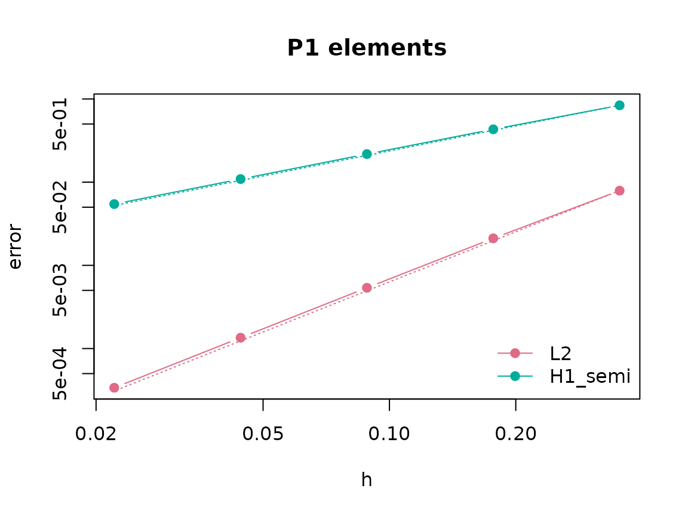

A solver is only trustworthy when its errors behave as the theory predicts. This article shows how pdecompR measures errors and how its solvers are verified.
Kinds of error
A computed solution differs from the true solution of a physical problem for several distinct reasons:
- model error: the PDE does not describe reality exactly;
- discretization error: u - u_h for the exact discrete solution u_h;
- quadrature error: integrals in assembly are approximated;
- algebraic error: the linear or nonlinear solve is not exact;
- time integration error for evolution problems.
The solver diagnostics report the algebraic residual.
errornorm() measures the discretization error against a
known solution, and estimate_error() estimates it when no
exact solution is known.
Error norms
\|u - u_h\|_{L^2}^2 = \int_\Omega (u - u_h)^2, \qquad |u - u_h|_{H^1}^2 = \int_\Omega |\nabla(u - u_h)|^2, \qquad \|u - u_h\|_{E}^2 = \int_\Omega k\,|\nabla(u - u_h)|^2 .
They are computed element by element with a quadrature rule two degrees higher than the assembly rule. Nodal errors are a different quantity: they can converge faster (superconvergence) and should not be mistaken for the L^2 error.
exact <- function(x, y) sin(pi * x) * sin(pi * y)
gradient <- function(x, y) cbind(pi * cos(pi * x) * sin(pi * y), pi * sin(pi * x) * cos(pi * y))
f <- function(x, y) 2 * pi^2 * exact(x, y)
sol <- solve_pde(poisson_problem(pde_mesh_rectangle(nx = 16), source = f, boundary = dirichlet_bc(0)))
errornorm(sol, exact, "L2")
#> [1] 0.005377436
#> attr(,"norm")
#> [1] "L2"
#> attr(,"gradient")
#> [1] "exact"
errornorm(sol, exact, "H1", gradient = gradient)
#> [1] 0.2176028
#> attr(,"norm")
#> [1] "H1"
#> attr(,"gradient")
#> [1] "exact"
errornorm(sol, exact, "H1_semi") # gradient by finite differences, labeled
#> [1] 0.2175363
#> attr(,"norm")
#> [1] "H1_semi"
#> attr(,"gradient")
#> [1] "finite difference"Convergence studies
convergence_study() solves on a sequence of meshes and
reports observed orders
p_i = \frac{\log(e_{i-1}/e_i)}{\log(h_{i-1}/h_i)} .
prob <- poisson_problem(pde_mesh_rectangle(nx = 4), source = f, boundary = dirichlet_bc(0))
p1 <- convergence_study(prob, exact, gradient, mesh_sizes = c(4, 8, 16, 32, 64))
p1
#> Mesh convergence study
#> h ndof L2 H1_semi rate_L2 rate_H1_semi
#> 0.35355 25 0.079077 0.83855 NA NA
#> 0.17678 81 0.021133 0.43180 1.904 0.9575
#> 0.08839 289 0.005377 0.21754 1.974 0.9891
#> 0.04419 1089 0.001350 0.10898 1.993 0.9973
#> 0.02210 4225 0.000338 0.05451 1.998 0.9993
plot(p1, main = "P1 elements")
Observed orders approach 2 and 1 as h decreases. On coarse meshes the error is not yet asymptotic, which is why tests in pdecompR accept, for example, an observed L^2 order above 1.9 instead of demanding exactly 2.
For quadratic elements the orders are 3 and 2:
p2b <- convergence_study(poisson_problem(pde_mesh_rectangle(nx = 4), source = f,
boundary = dirichlet_bc(0), degree = 2),
exact, gradient, mesh_sizes = c(4, 8, 16, 32))
p2b
#> Mesh convergence study
#> h ndof L2 H1_semi rate_L2 rate_H1_semi
#> 0.35355 81 4.328e-03 0.129389 NA NA
#> 0.17678 289 5.481e-04 0.033387 2.981 1.954
#> 0.08839 1089 6.874e-05 0.008419 2.995 1.988
#> 0.04419 4225 8.601e-06 0.002110 2.999 1.997On meshes that are not structured, convergence_study()
refines uniformly:
L <- pde_mesh_polygon(rbind(c(0, 0), c(1, 0), c(1, 1), c(0.5, 0.7), c(0, 1)), h = 0.3)
ex2 <- function(x, y) exp(x) * sin(y)
cs <- convergence_study(poisson_problem(L, source = 0, boundary = dirichlet_bc(ex2)), ex2,
refinements = 3)
cs
#> Mesh convergence study
#> h ndof L2 H1_semi rate_L2 rate_H1_semi
#> 0.25000 35 4.413e-03 0.13859 NA NA
#> 0.12500 117 1.103e-03 0.06940 2 0.9978
#> 0.06250 425 2.757e-04 0.03471 2 0.9995
#> 0.03125 1617 6.892e-05 0.01736 2 0.9999The validation suite
The package tests encode these verifications permanently:
| Problem | Check |
|---|---|
| affine solution x + 2y (P1, P2, polygon mesh) | reproduced to 10^{-12} |
| Poisson, \sin\pi x \sin\pi y, P1 | orders above 1.9 (L^2) and 0.95 (H^1) |
| Poisson, P2 | orders above 2.85 and 1.9 |
| mixed Dirichlet and Neumann | optimal orders |
| variable diffusion, Robin conditions | optimal orders |
| pure Neumann | compatibility check, zero-mean gauge, error bound |
| heat equation, P1-exact solution | temporal orders 2 (Crank-Nicolson) and 1 (backward Euler) |
| reaction-diffusion | linear decay, logistic ODE, coupled linear ODE |
| advection-diffusion | optimal orders; SUPG removes oscillations |
| quasilinear, semilinear and p-Laplace problems | optimal orders, Newton convergence |
| adaptivity on the L-shaped domain | optimal adaptive rate, beats uniform refinement |
| sensitivities | forward, adjoint and finite differences agree |
These tests use meshes of at most 32 by 32 so that
R CMD check stays fast.